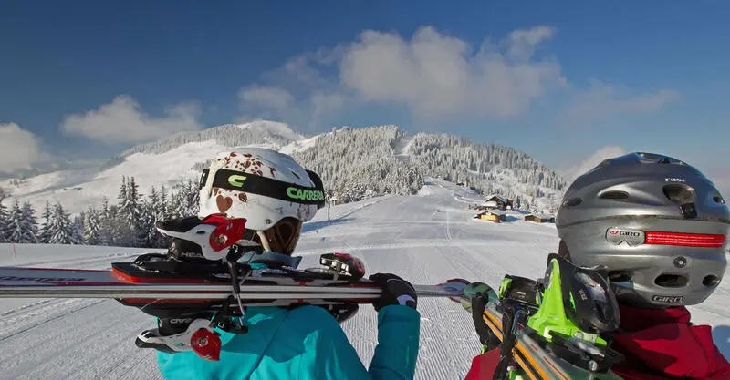
Skiën vanuit het dorp
De Markbachjochbahn brengt je vanuit Niederau omhoog naar het Markbachjoch. Brede, zonnige pistes, ideaal voor beginners en gezinnen, met afdalingen terug tot in het dorp.
Wildschönau · Tirol · Oostenrijk
Het zonnige bergdorp aan het begin van de Wildschönau. Een plek om te skiën, te wandelen en elk jaar weer thuis te komen.
❄ Winterseizoen: pistes vanuit het dorp, rodelen en knisperende wintermiddagen.
☀ Zomerseizoen: almen, bergwandelingen en lange avonden op het terras.
Het dorp
Niederau ligt in de Wildschönau, in Tirol (Oostenrijk). Het is het eerste dorp dat je bereikt als je vanuit het Inndal bij Wörgl de bergweg omhoog rijdt het dal in. Het ligt op zo’n 828 meter hoogte in een breed, groen hoogdal, omringd door bergweiden, bossen en toppen in de Kitzbüheler Alpen.
Samen met Oberau, Auffach en Thierbach vormt Niederau de gemeente Wildschönau in het district Kufstein. Het dorp is van oudsher geliefd bij Nederlandse en Britse gasten: compact, gemoedelijk, met skischolen, pensions en hotels op loopafstand van de lift.
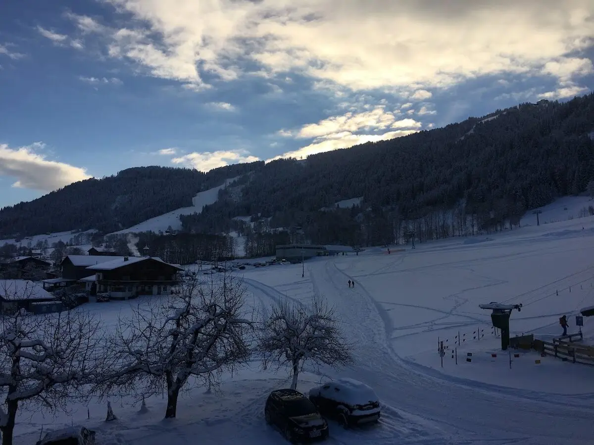
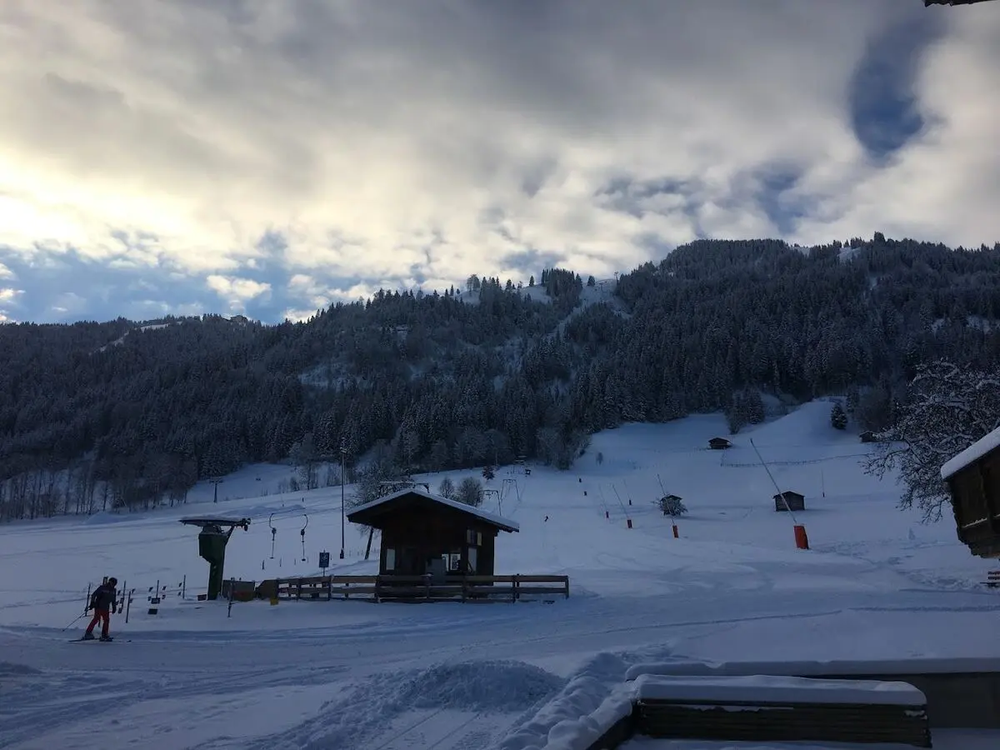
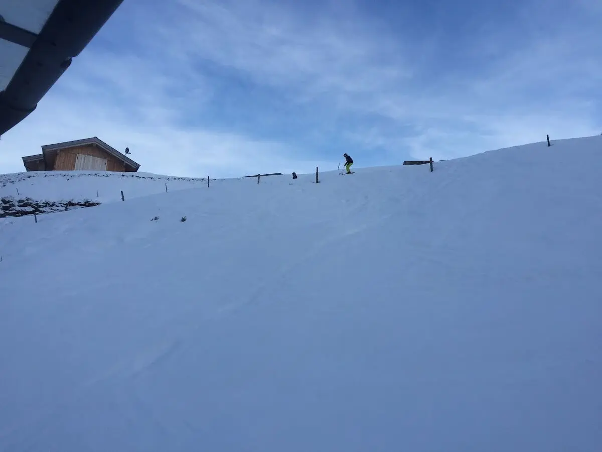
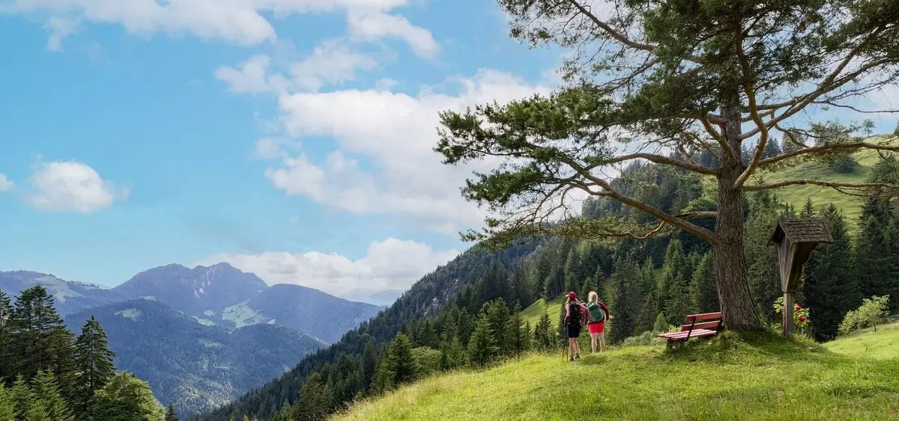
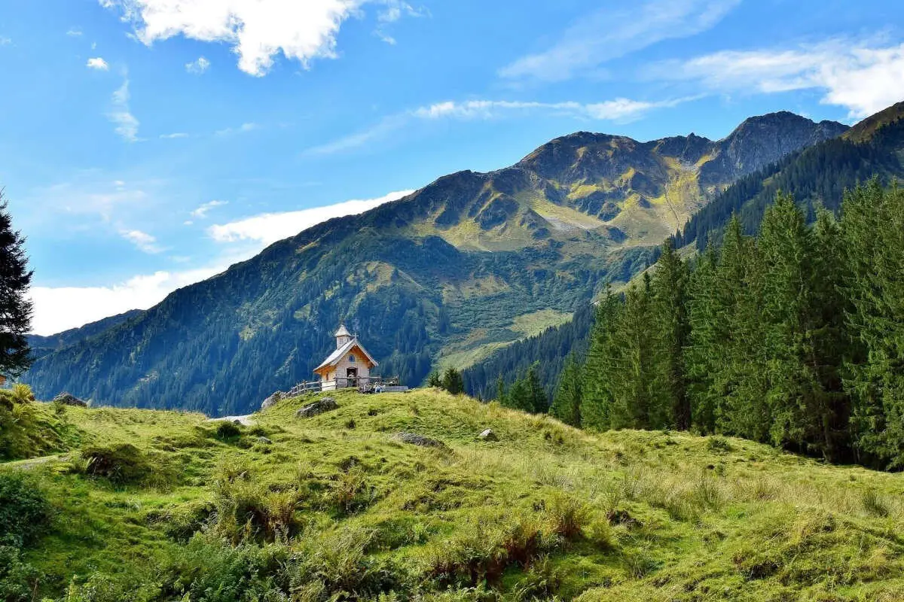
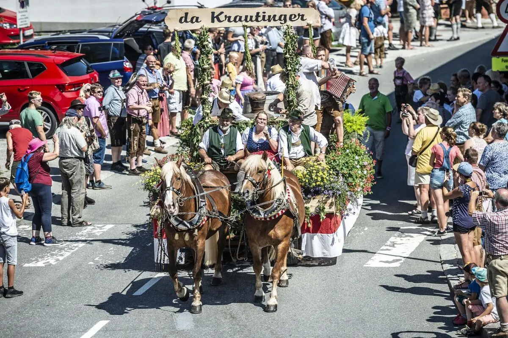
Het hele jaar
Winter en zomer zijn de hoogtijdagen van Niederau, maar ook lente en herfst hebben hun eigen charme. Hieronder vind je wat elk seizoen te bieden heeft, een kalender voor het hele jaar en de beste bronnen voor het actuele weer.

De Markbachjochbahn brengt je vanuit Niederau omhoog naar het Markbachjoch. Brede, zonnige pistes, ideaal voor beginners en gezinnen, met afdalingen terug tot in het dorp.
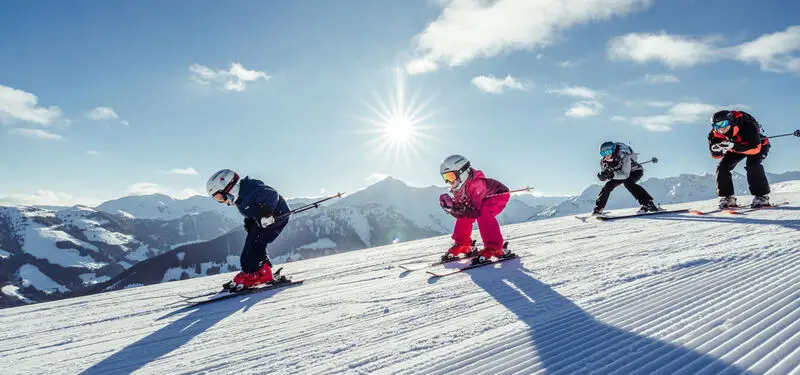
Met de skipas van Ski Juwel Alpbachtal Wildschönau ski je ook op de Schatzberg in Auffach en via de verbinding door naar het Alpbachtal. De skibus rijdt tussen de dorpen.
Samen 145 km piste, 47 liften, 24 skihutten en drie snowparks.
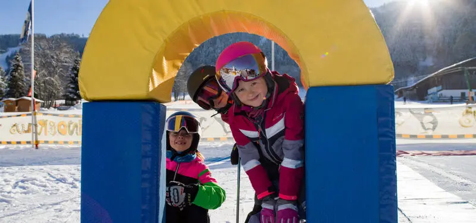
Niederau heeft van oudsher sterke skischolen met lessen in het Nederlands, Engels en Duits, en oefenweides vlak bij het dorp. Een fijne plek om te leren skiën.
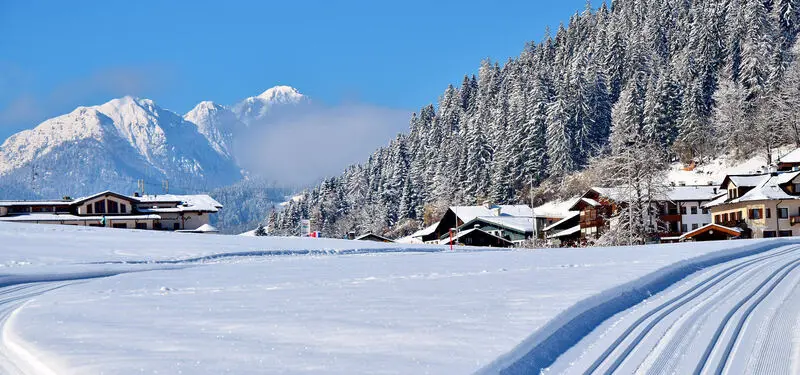
Loipes door het dal en geruimde winterwandelpaden langs boerderijen en kapelletjes. Ook sneeuwschoenwandelen en rodelen zijn populair: het dal telt drie rodelbanen, die van het Lahnerköpfl ligt in Niederau zelf.
De Penningberg-loipe (12 km) begint in Niederau; in het hele dal liggen zo’n 30 tot 40 km loipes.
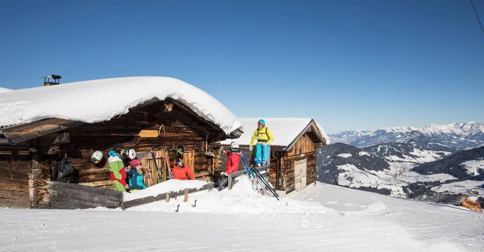
Gezellig zonder overdreven te zijn: na een dag op de latten schuif je aan in een berghut of in het dorp voor Glühwein, Kaiserschmarrn of een Tiroler Gröstl.
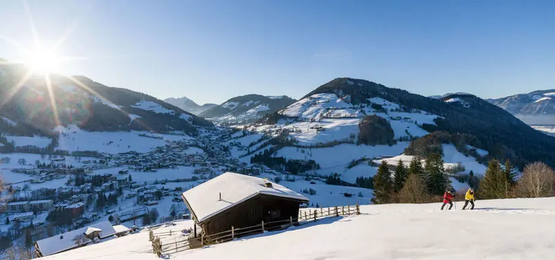
Niederau ligt open in het dal en krijgt veel zon – heerlijk op een terras in maart, wanneer de dagen langer worden en de sneeuw nog goed is.
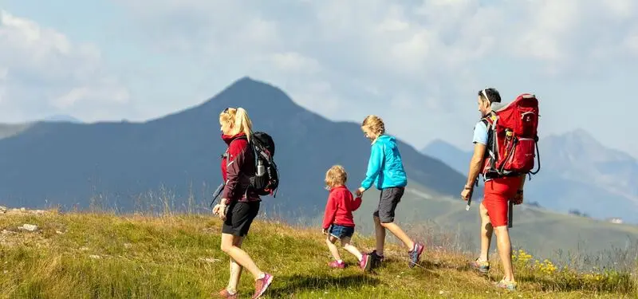
Honderden kilometers gemarkeerde wandelpaden: van rustige dalwandelingen tot tochten over de bergkammen rond het dal. Met de gondel ben je in een paar minuten op hoogte.
Het dal telt meer dan 300 km gemarkeerde wandelpaden.
Een van de mooiste kloofwandelingen van Tirol: vanuit de Wildschönau langs de woeste Wildschönauer Ache naar beneden, naar Kundl in het Inndal.
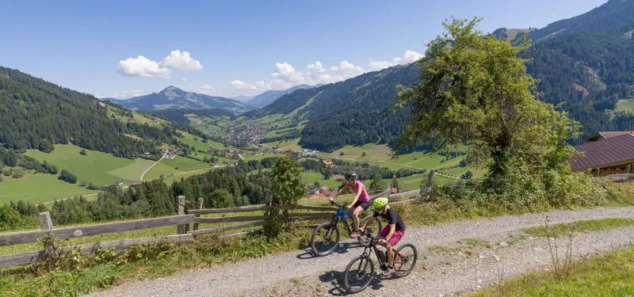
Bosweggen en bergweggetjes naar de almen; met een e-bike zijn ook de hoger gelegen hutten goed bereikbaar.
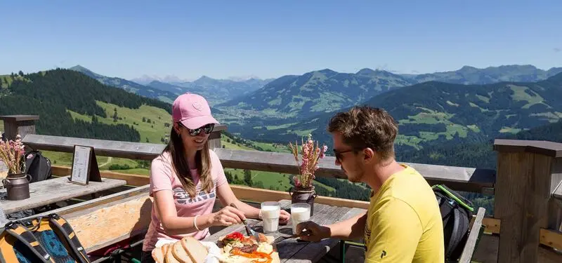
In de zomer zijn veel almen open (“bewirtschaftet”): kaas, karnemelk, speck en Kaspressknödel met uitzicht op de Hohe Tauern en het Kaisergebergte.
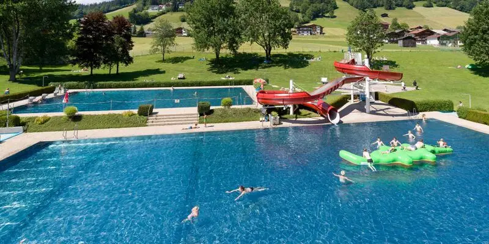
Speeltuinen, beekjes om te dammen, boerderijdieren en korte wandelingen met een hut als beloning. De Wildschönau is ingericht op gezinnen. Aan de rand van Niederau ligt een openluchtzwembad met drie bassins en een grote glijbaan.
Tussen Niederau en Oberau ligt een verwarmd openluchtbad: ruim 1.000 m² wateroppervlak, verdeeld over drie baden.
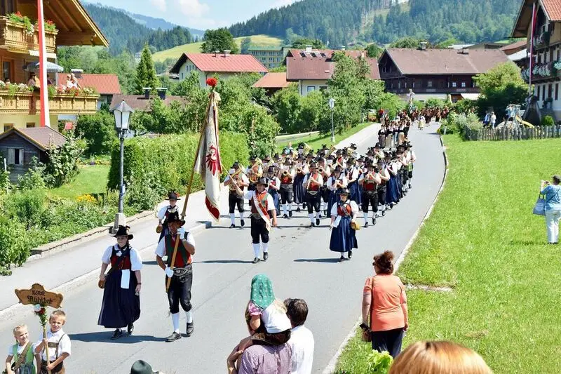
Blaasmuziek op het dorpsplein, kerkelijke feestdagen en de Almabtrieb in het najaar, wanneer het vee versierd terugkeert uit de bergen.
Hoogtepunt is het Talfest in augustus, afwisselend in Niederau, Oberau en Auffach, met een grote optocht.
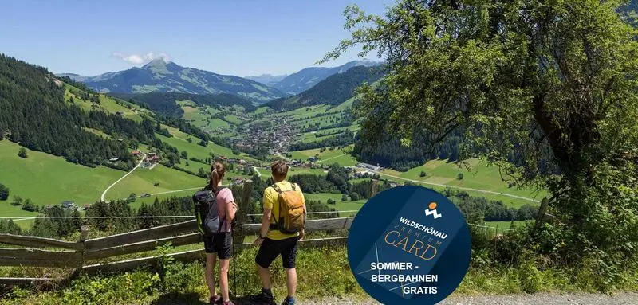
Gasten krijgen via hun accommodatie een gastenkaart. Met de Wildschönau Premium Card, alleen via partneraccommodaties, gebruik je in de zomer de bergbanen onbeperkt. Vraag bij je accommodatie welke kaart je krijgt.
Je krijgt de kaart bij deelnemende accommodaties. Daarmee rijd je ook gratis met de wandelbus, zwem je in de openluchtbaden, bezoek je het Bergbauernmuseum z’Bach in Oberau en kunnen kinderen (5–14 jaar) mee met de Drachenclub.
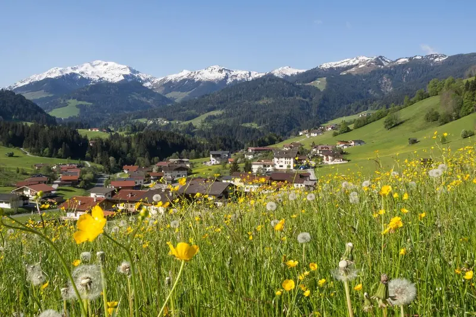
In maart staat de zon al hoog en ski je nog op zonnige pistes, terwijl onderin het dal de sneeuw verdwijnt en de weiden geel kleuren van boterbloemen en paardenbloemen. April en mei zijn rustig. Op lagere hoogte wandel je over droge paden; hogere routes kunnen tot ver in mei nog sneeuw hebben.
Veel liften en hutten houden tussen de seizoenen een korte pauze, dus kijk vooraf wat er open is. Het weer wisselt snel: neem altijd een extra laag mee.
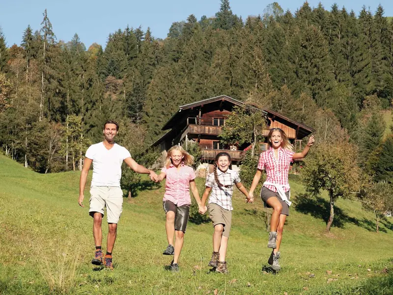
In het najaar is het in de bergen vaak stabiel en helder, met veel zicht en weinig drukte op de paden. Op de derde zaterdag van september is er in Auffach de Almabtrieb: rond de vijfhonderd koeien komen versierd van de alm, met muziek en een markt met streekproducten en ambacht (in 2025 op 20 september, in 2026 op 19 september).
Rond de overgang van september naar oktober staat de Krautingerwoche in het teken van de stoppelknol en de schnaps die ervan wordt gestookt, met wandelingen van boerderij naar boerderij. De exacte data wisselen per jaar. In deze weken laat ook het edelhert zich horen: de bronst loopt van eind augustus tot begin oktober.
Een live weerbericht hoort bij een bron die elke minuut wordt bijgewerkt, niet bij een statische pagina. Gebruik daarom onderstaande actuele bronnen en kijk vlak voor vertrek: in de bergen kan het weer in een uur omslaan.
Activiteiten
Of je nu komt om te skiën, te wandelen of gewoon om bij te komen: in en rond Niederau is het hele jaar genoeg te beleven. Hieronder vind je wat er in het dal te doen is en welke uitstapjes binnen een uur rijden de moeite waard zijn.
Slecht weer? Denk aan het Bergbauernmuseum in Oberau, de Swarovski Kristallwelten, de musea en de Alpenzoo in Innsbruck of een middag wellness.
Reistijden zijn indicaties met de auto vanuit Niederau. Openingstijden en dienstregelingen wisselen per seizoen; kijk vooraf op de website van de aanbieder.
Natuur & avontuur
Het dal ligt tussen bossen, alpenweiden en bergtoppen. Wie rustig is en goed kijkt, ziet hier veel. Een paar ideeën voor de dagen dat je niet wilt skiën of een grote wandeling wilt maken.
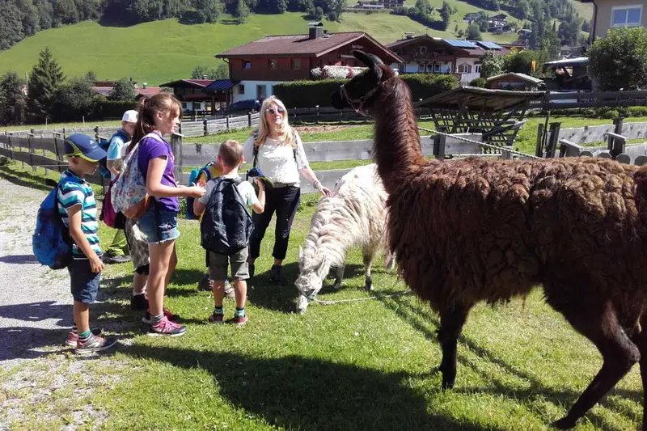
In de bossen en op de bergweiden rond het dal leven onder meer reeën, edelherten, gemzen en marmotten; hoog in de lucht zweeft soms een steenarend. Marmotten zitten graag op zonnige zuidhellingen tussen ruwweg 900 en 2.500 meter, gemzen houden zich vooral boven de boomgrens op.
De meeste kans heb je vroeg in de ochtend of in de schemering. Neem een verrekijker mee, blijf op de paden en houd afstand. Voer geen wilde dieren en geef ze in de winter extra rust door op gemarkeerde routes te blijven.
Liever zeker van een ontmoeting? In Wildpark Aurach bij Kitzbühel (± 45 minuten) leven onder meer edelherten, damherten, moeflons, steenbokken en lynxen. Ook op sommige boerderijen in het dal zie je dieren zoals lama’s, geiten en koeien van dichtbij.
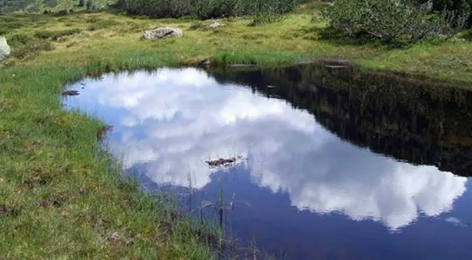
In het dal zwem je in het verwarmde openluchtbad tussen Niederau en Oberau. Zin in een echt meer? Op 14 tot 16 km afstand liggen er meerdere, met de auto in 30 tot 45 minuten te bereiken: de Reintalersee bij Kramsach, een van de warmste badmeren van Tirol (tot ongeveer 25 °C) met ligweiden en een wandelpad rond het water; de Thiersee; en de Hintersteiner See bij de Wilder Kaiser, met een mooie rondwandeling. Wat verder weg ligt de Achensee (± 50 minuten), het grootste meer van Tirol.
Bergwater blijft ook midden in de zomer fris. Houd kinderen goed in de gaten en kijk vooraf naar parkeer- en entreeprijzen.
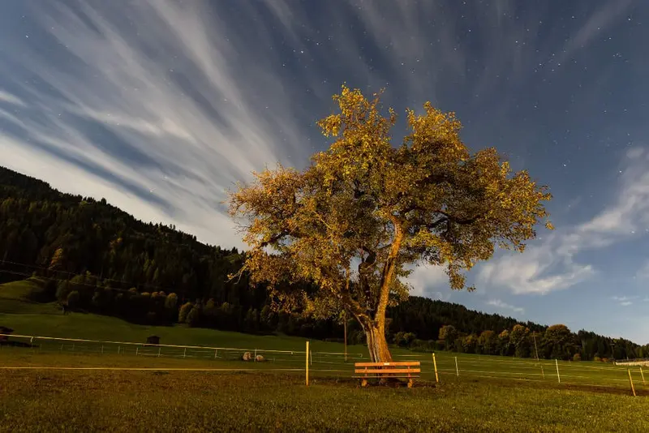
Boven een donker bergdal zie je veel meer sterren dan thuis. Kies een heldere nacht rond nieuwe maan, loop weg van de straatverlichting – bijvoorbeeld naar een bergweide boven het dorp – en geef je ogen een half uur om te wennen. Gebruik daarna alleen een rood lichtje, want een telefoonscherm verpest je nachtzicht. Bij een echt donkere hemel is zelfs de Melkweg met het blote oog te zien.
Rond 12 augustus piekt de meteorenzwerm van de Perseïden: met geduld tel je dan veel vallende sterren. In de winter zijn de nachten lang en helder, maar ook ijskoud. Een paardensleetocht bij fakkellicht onder een sterrenhemel is dan een sfeervol alternatief.
Neem een hoofdlamp en warme kleding mee, loop in het donker niet alleen over steile paden en laat iemand weten waar je heen gaat.
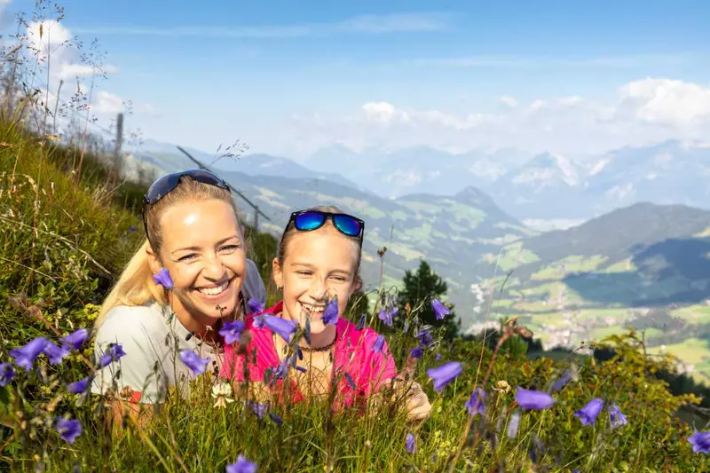
Van mei tot in de zomer kleuren de weiden: eerst boterbloemen en paardenbloemen in het dal, later alpenrozen, gentianen en andere bloemen hoger op de berg. Veel alpenplanten zijn beschermd, zoals edelweiss en sommige gentianen. Kijk en fotografeer, maar pluk niets en blijf op de paden, want vertrapt gras herstelt maar langzaam. Eet alleen bessen of kruiden die je zeker herkent.
De Kundler Klamm is een smalle kloof met hoge, steile rotswanden, waar de Wildschönauer Ache doorheen raast. Het brede pad is ongeveer 3,5 km lang (± 1 uur per richting), zonder trappen en daarom goed te doen met kinderen; bij de ingang staat een speelplaats.
In de kloof ligt een klimtuin voor beginners én gevorderden. Wie wil abseilen, afklimmen of canyoning proberen, doet dat met een gecertificeerde gids die helm en touwen levert; paragliden kan in tandem met een piloot. Het toeristenbureau weet welke aanbieders nu actief zijn. Ga bij veel regen niet de kloof in: het water kan snel stijgen.
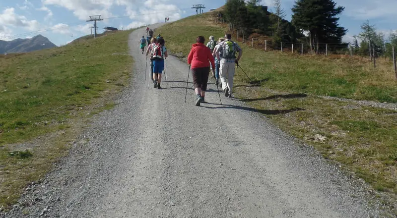
Dieren op vakantie
Voor veel gezinnen horen dieren er gewoon bij. Dit moet je vooraf regelen en hier moet je op letten.
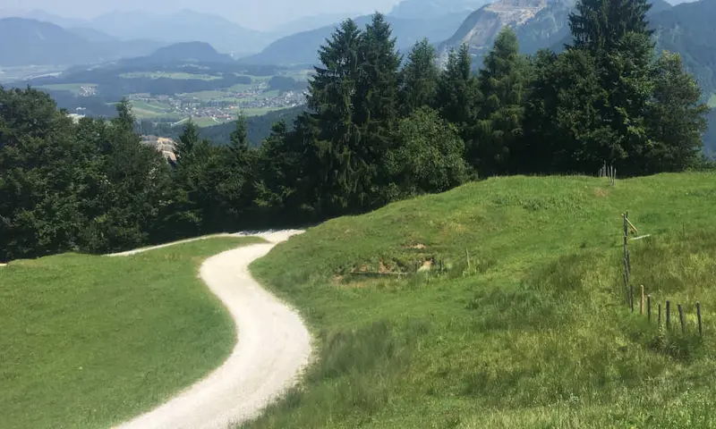
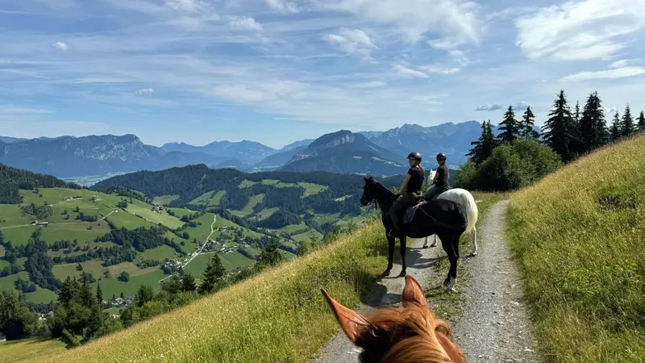
Heb je zelf geen paard maar wil je wel rijden? Hotel Wastlhof in Niederau heeft al meer dan vijftig jaar een manege, met een rijhal, een buitenbak met springparcours en zo’n vijftien paarden, onder wie Haflingers: de goudbruine Tiroler paarden met lichte manen. Je kunt rijles nemen, of je nu net begint of al ervaring hebt. Daarnaast is er ponyrijden voor kinderen van 3 tot 6 jaar en zijn er buitenritten voor ervaren ruiters, onder meer naar een alm op ruim 1.300 meter. In de winter ontdek je het dal ook met een paardenslee.
Wil je je eigen paard meenemen? Niet elke manege of boerderij heeft gastboxen, dus vraag het ruim van tevoren aan je accommodatie of aan het toeristenbureau. In de Kitzbüheler Alpen bieden enkele paardenhotels en -boerderijen gastboxen aan. Bespreek ook de routes in de bergen en vraag je dierenarts welke papieren en vaccinaties nodig zijn voor de reis.
De Wildschönau
Het hoogdal Wildschönau ligt in de Kitzbüheler Alpen en staat bekend als een zonnige en sneeuwzekere bestemming. Mede dankzij de vriendelijke uitstraling won het dal de eerste prijs van de ADAC – de Duitse ANWB – in de categorie “Klein & Fein”.
De Wildschönau bestaat uit de vier kerkdorpen Niederau, Oberau, Auffach en Thierbach, plus het gehucht Mühltal. Het dal is bij uitstek geschikt voor ontspannen skiën midden in een prachtige bergwereld. De regio is altijd goed bereikbaar, ligt niet ver van Kufstein en biedt naast traditionele wintersport ook een veelzijdig zomeraanbod.
Het eerste en meest toeristische dorp, met de gondel naar het Markbachjoch en het grootste aanbod aan accommodatie.
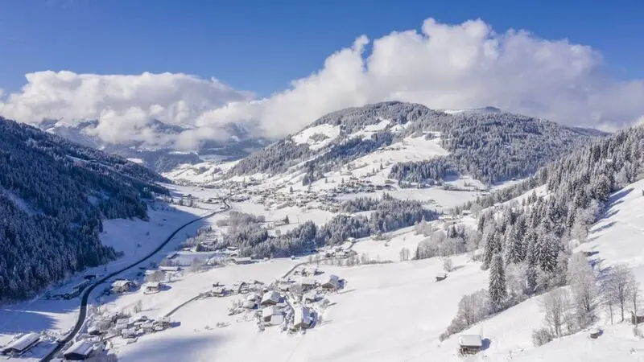
± 940 mHet bestuurlijke hart van het dal, met de grote parochiekerk en een brede, zonnige vlakte.
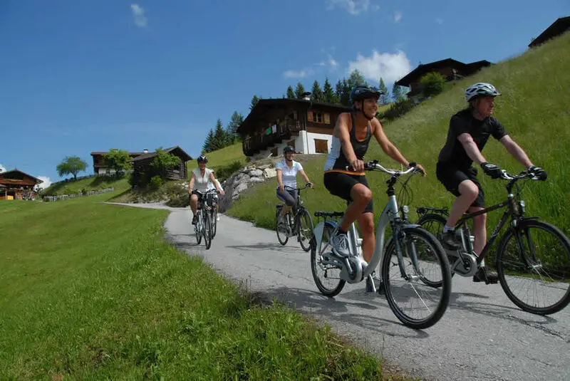
± 870 mAchter in het dal, aan de voet van de Schatzberg en de verbinding met het Alpbachtal.
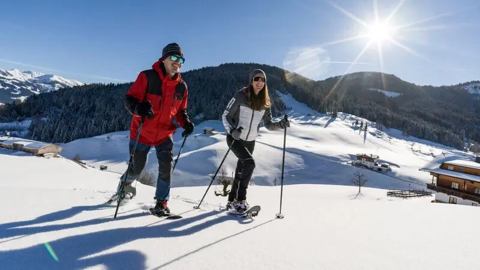
± 1.150 mHet kleinste en hoogst gelegen dorp, rustig en met weids uitzicht over het Inndal.
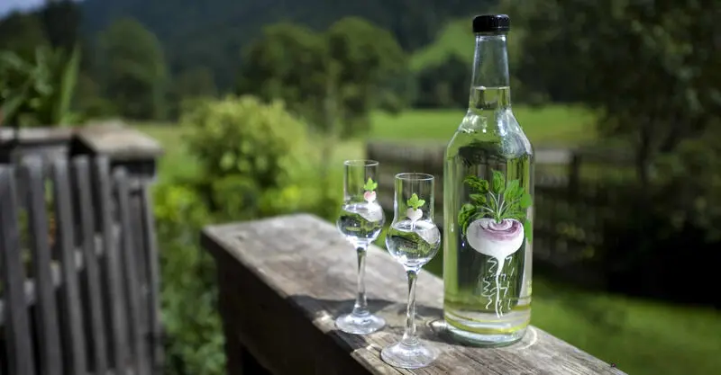
De Wildschönau staat bekend om Krautinger, een stevige brandewijn gestookt van witte knollen (stoppelknollen). Volgens de overlevering kregen de boeren van het dal het recht om hem te stoken al in de tijd van keizerin Maria Theresia. Alleen een beperkt aantal boerderijen mag hem nog maken – proeven doe je op de boerderij zelf.
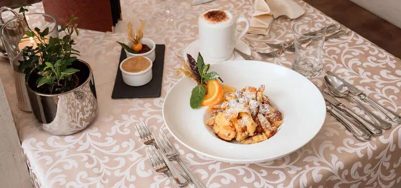
Geschiedenis
Niederau ligt in de Wildschönau, een hoogdal in Tirol (Oostenrijk). Eeuwenlang was het een afgelegen dal van boeren en mijnwerkers. Pas in de twintigste eeuw kwamen de eerste toeristen – en in 1947 begon in Niederau met de eerste stoeltjeslift van Tirol het wintersporttijdperk van het dal.
Die lift was een kunststuk: ingenieur Sepp Hochmuth bouwde hem vlak na de Tweede Wereldoorlog, volgens de overlevering met motoren en aandrijfwielen van tanks die bij het station van Wörgl waren achtergelaten. Op 14 januari 1947 ging hij open, van Niederau naar het Markbachjoch.
Alles over het Markbachjoch: liften, hutten en geschiedenis →
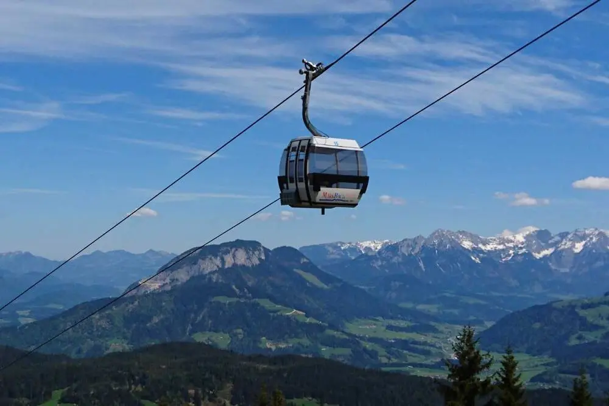
Lanerköpfl
Direct boven het dorp rijst het Lanerköpfl op – door het hotel en veel bewoners ook Lahnerköpfl genoemd. Samen met het Markbachjoch vormt het het skigebied van Niederau, met afdalingen die tot in het dorp eindigen.
De lift. Jarenlang bracht een eenpersoons stoeltjeslift de skiërs naar boven. Sinds het seizoen 2008/09 rijdt de Lanerköpflbahn: een snelle vierpersoons stoeltjeslift met kap, van het dalstation op 843 m naar het bergstation op 1.560 m – in zo’n zeven minuten, met plaats voor 1.400 personen per uur.
De afdaling. De noordhellingen van het Lanerköpfl en het Markbachjoch staan bekend als uitdagend; vooral de Hochberg-afdaling vraagt ook van ervaren skiërs het nodige. Wie het rustiger aan wil doen, oefent beneden op de oefenweiden aan de rand van het dorp. Vraag ter plaatse naar de actuele situatie van de oefenlift.
De rodelbaan. Het Lanerköpfl is ook de rodelberg van Niederau: vanaf het bergstation loopt een natuurrodelbaan van bijna 6 km langs de Gseng-Alm en de Laner-Alm terug naar het dalstation. Met 736 m hoogteverschil en gemiddeld 14% helling is het een sportieve baan.
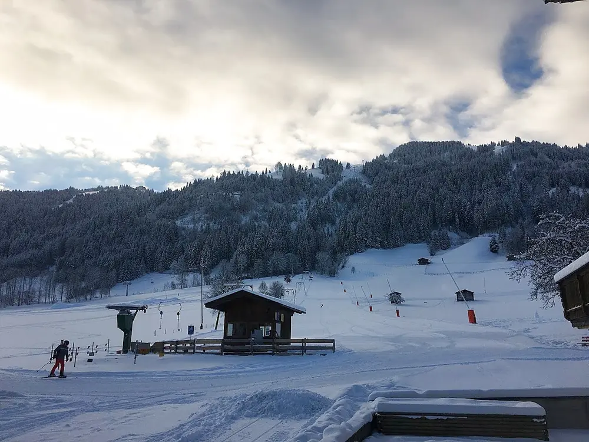
Aanbevolen verblijf
Een viersterrenhotel met wellness, gerund door een familie, aan de doorgaande weg door Niederau. De pistes, loipes en wandelpaden beginnen vrijwel naast de deur.
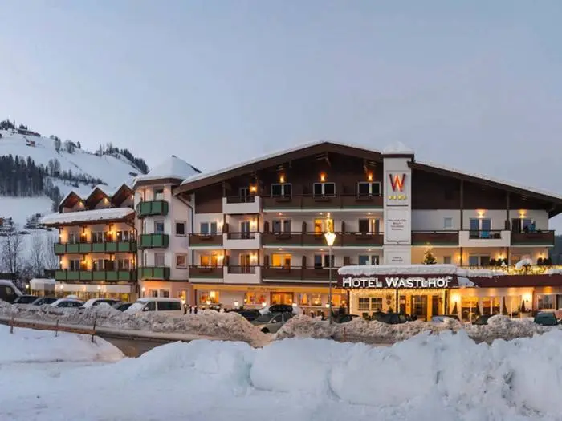
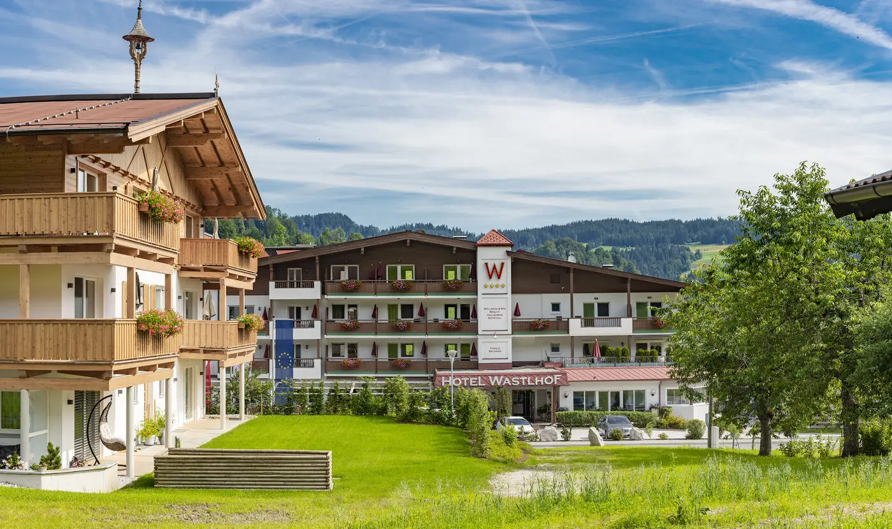


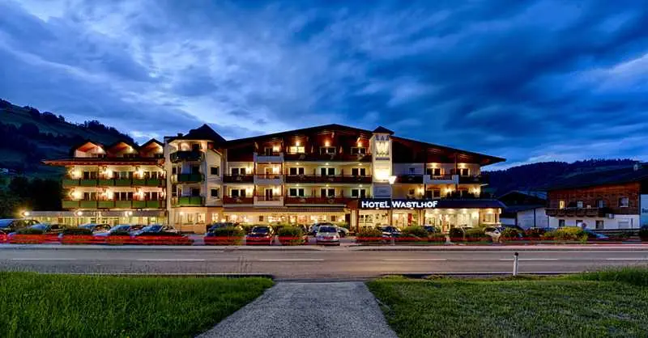
Partner: Niederau.nl werkt samen met Hotel Wastlhof, dat foto’s beschikbaar stelde. Dit is een persoonlijke aanbeveling; er is geen vergoeding betaald of ontvangen. Kijk voor prijzen, faciliteiten en beschikbaarheid op de website van het hotel.
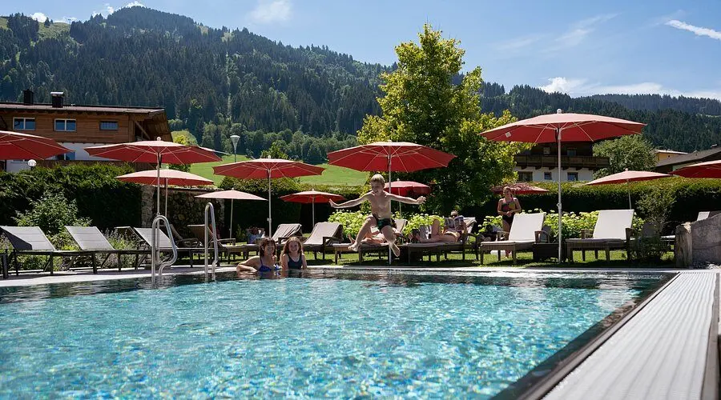
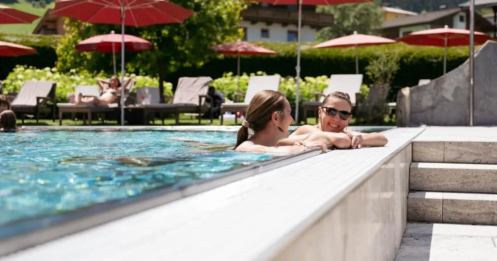
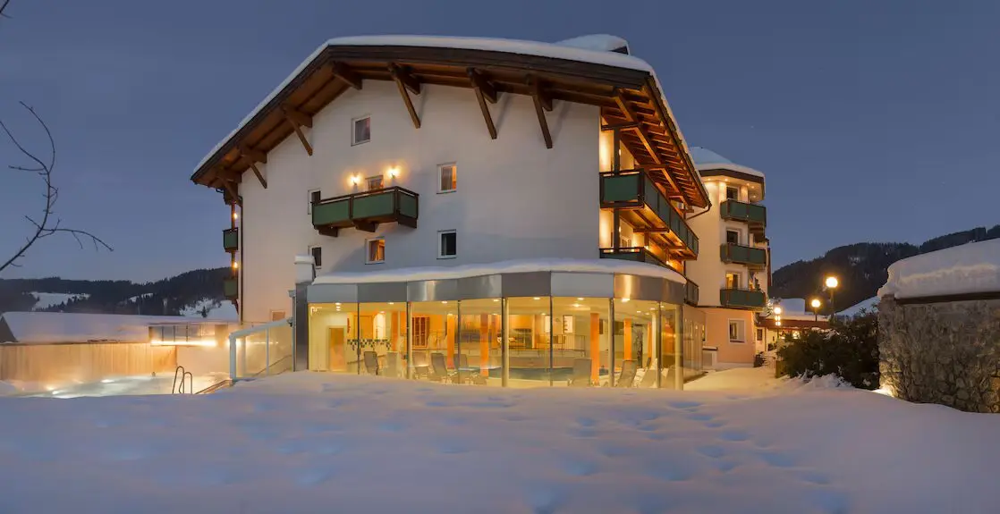
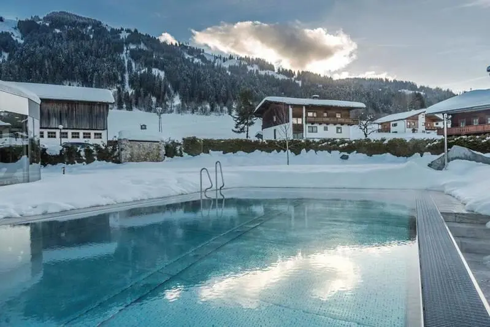
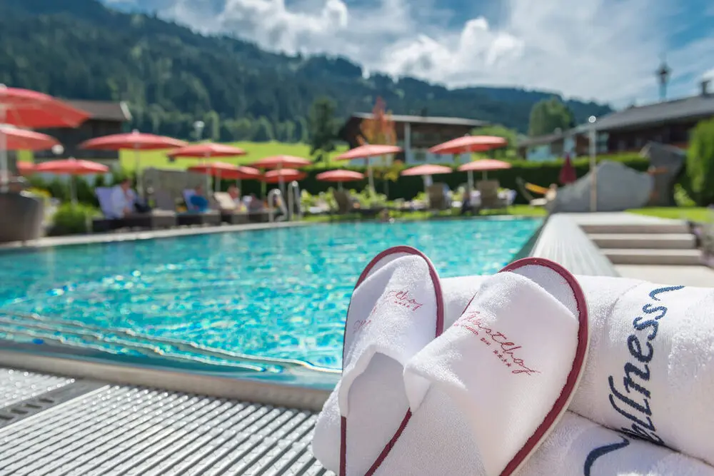
Zoek je een ander adres, zoals een pension, vakantiewoning of boerderij? Of wil je weten wat er deze week te doen is? Dan kun je terecht bij het toeristenbureau van het dal, Wildschönau Tourismus. Daar vind je accommodatie in alle vier de dorpen, het evenementenprogramma en actuele informatie over liften, loipes en wandelroutes.
Wildschönau TourismusHet kantoor zit in Oberau, op een paar minuten rijden van Niederau. Kijk voor de openingstijden op de website.
Bereikbaarheid
Let op: op de Oostenrijkse snelweg heb je een vignet nodig (digitaal of als sticker). Vanuit Midden-Nederland reken je op circa 9 à 10 uur rijden.
Treinstation Wörgl Hbf ligt aan de hoofdlijn München – Innsbruck en heeft goede verbindingen, ook met nachttreinen. Vanaf Wörgl rijdt een streekbus de Wildschönau in.
Dichtstbijzijnde luchthavens: Innsbruck (± 1 uur), Salzburg (± 1,5 uur) en München (± 2 uur).
Praktisch
Voor wintersport is half januari tot half maart het meest sneeuwzeker; maart is extra zonnig. In de zomer zijn juni en september rustiger dan de Duitse en Nederlandse schoolvakanties, met prima wandelweer.
Ja, voor de Oostenrijkse snelwegen (zoals de A12 naar Wörgl). Je koopt het online bij ASFINAG of bij tankstations vlak voor de grens. Een digitaal vignet moet je bij online aankoop enkele dagen van tevoren kopen.
Zeker. De brede pistes rond het Markbachjoch, de oefenweides bij het dorp en de skischolen maken Niederau van oudsher populair bij families en beginnende skiërs.
De voertaal is Duits (met een stevig Tirools dialect), maar in hotels, skischolen en restaurants red je je goed met Engels, en vaak ook met Nederlands.
Algemeen alarmnummer 112. Bergredding in Oostenrijk: 140. Check vóór een toer in de winter altijd het lawinebulletin.
Bij de officiële toeristische organisatie van de Wildschönau en bij Ski Juwel. Zie de links hiernaast.
Vaak wel, maar dat verschilt per accommodatie. Vraag vooraf of honden welkom zijn en wat het kost. Neem het EU-dierenpaspoort mee en houd je hond op alpenweiden aan de lijn. Meer tips staan bij ‘Met je hond’.
In het dal in het verwarmde openluchtbad tussen Niederau en Oberau en bij accommodaties met een eigen zwembad. Voor een natuurlijk meer rijd je 30 tot 45 minuten naar de Reintalersee, de Thiersee of de Hintersteiner See.
Alleen waar gastboxen beschikbaar zijn. Vraag het ruim van tevoren aan je accommodatie of aan het toeristenbureau.
Met geduld: vroeg in de ochtend of in de schemering op bergweiden en aan bosranden, met een verrekijker en op afstand. Wil je zeker zijn van een ontmoeting, bezoek dan Wildpark Aurach bij Kitzbühel.
Niederau.nl is een onafhankelijke site en niet verbonden aan de toeristische organisatie of de liftmaatschappij. Controleer actuele tijden en prijzen altijd bij de officiële bronnen.
Fotogalerij
Een greep uit het dal door de seizoenen heen. Tik of klik op een foto om hem groter te bekijken.
Hotel Wastlhof
Hotel Wastlhof
Hotel Wastlhof
Hotel Wastlhof
Hotel Wastlhof
Hotel Wastlhof
Hotel Wastlhof
Hotel Wastlhof
Hotel Wastlhof
 Hotel Wastlhof
Hotel Wastlhof
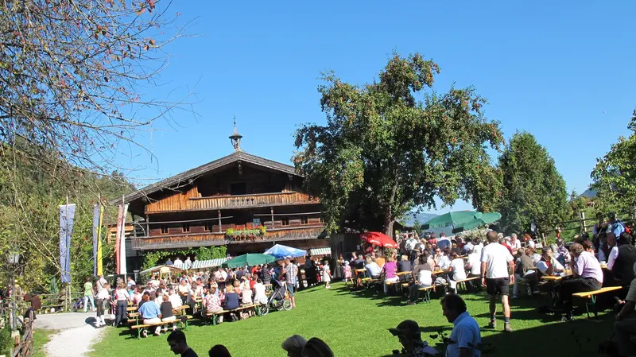
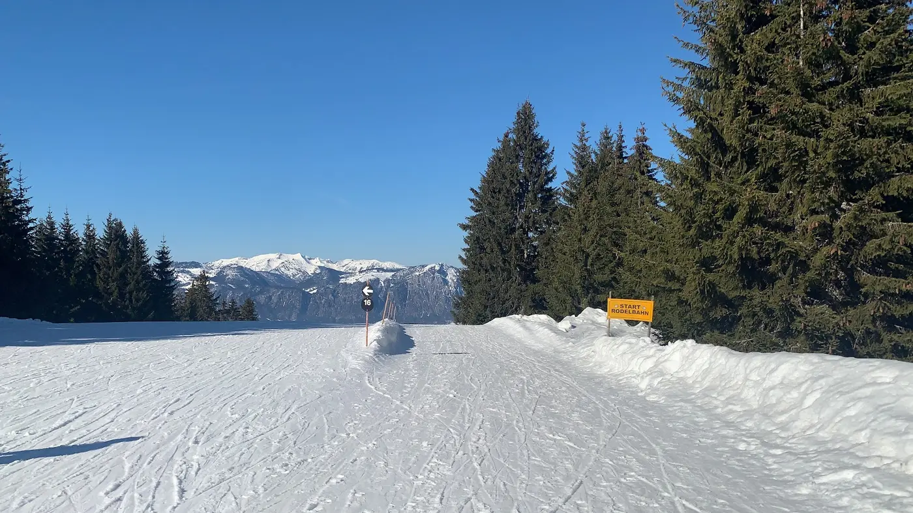
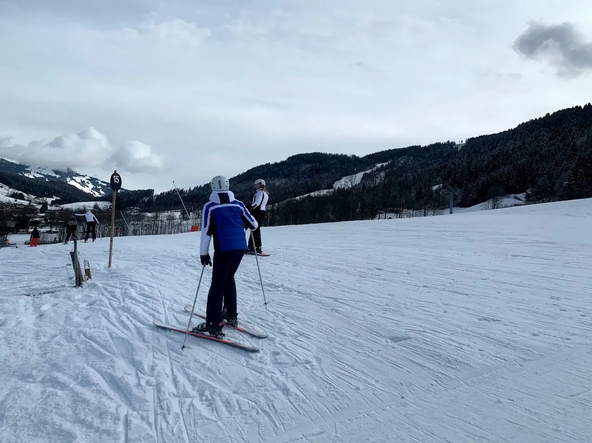
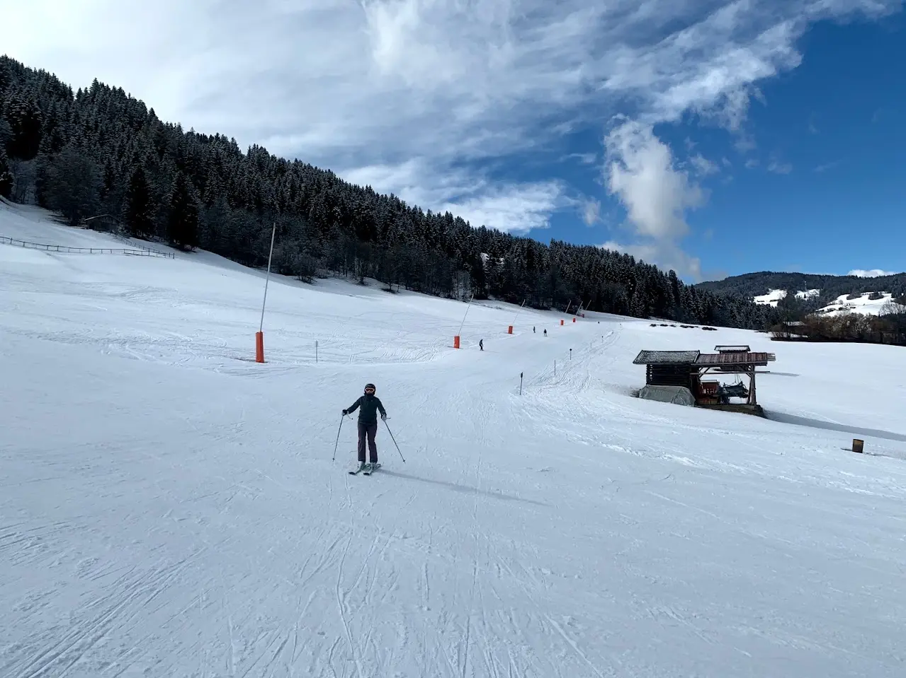
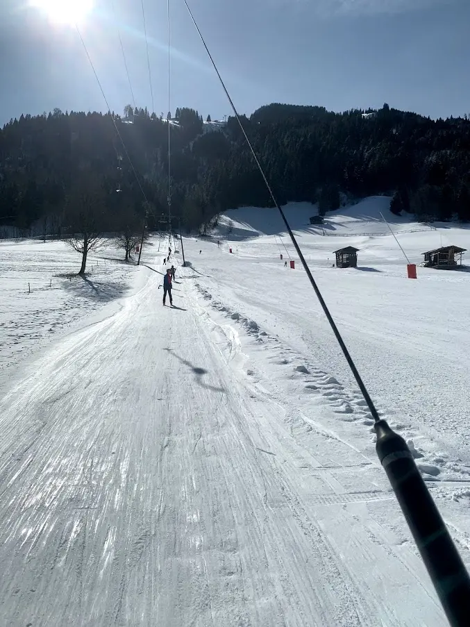
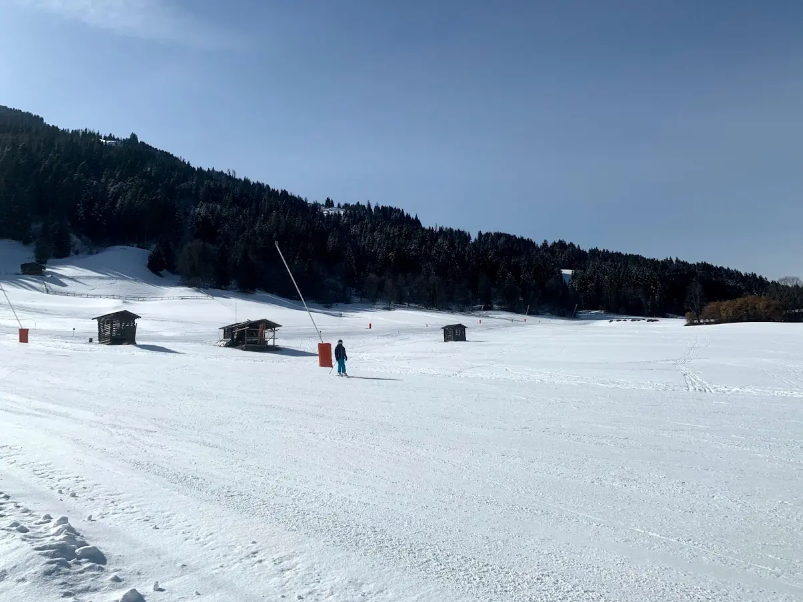
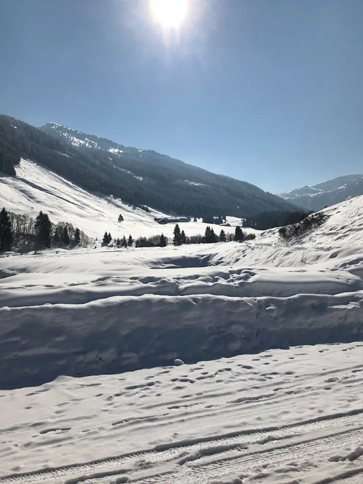
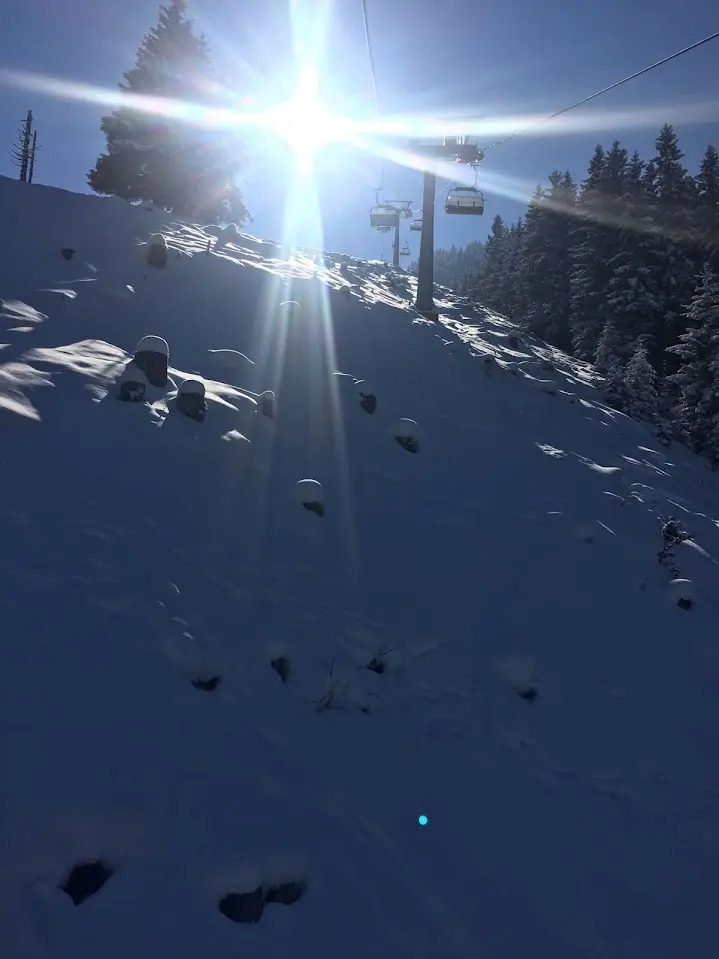
Hotel WastlhofEen groot deel van deze foto’s is beschikbaar gesteld door onze partner Hotel Wastlhof in Niederau. Hartelijk dank voor het gebruik van de beelden en voor de prettige samenwerking.